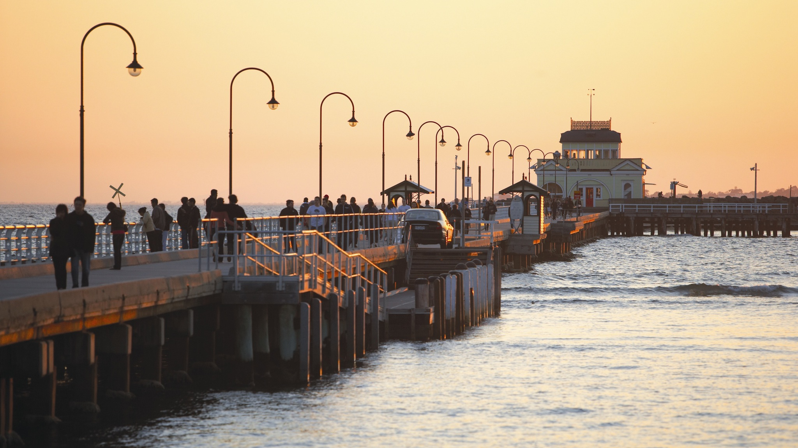
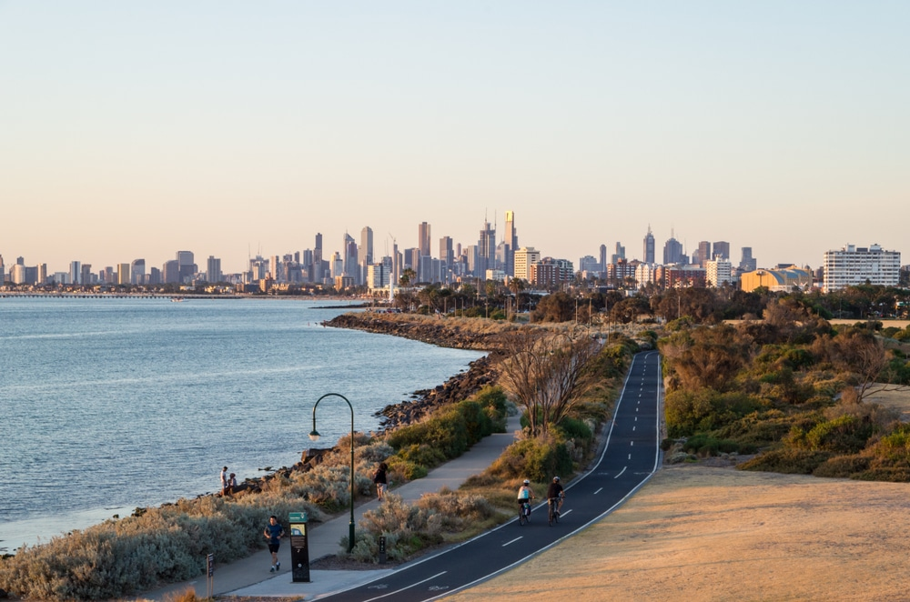
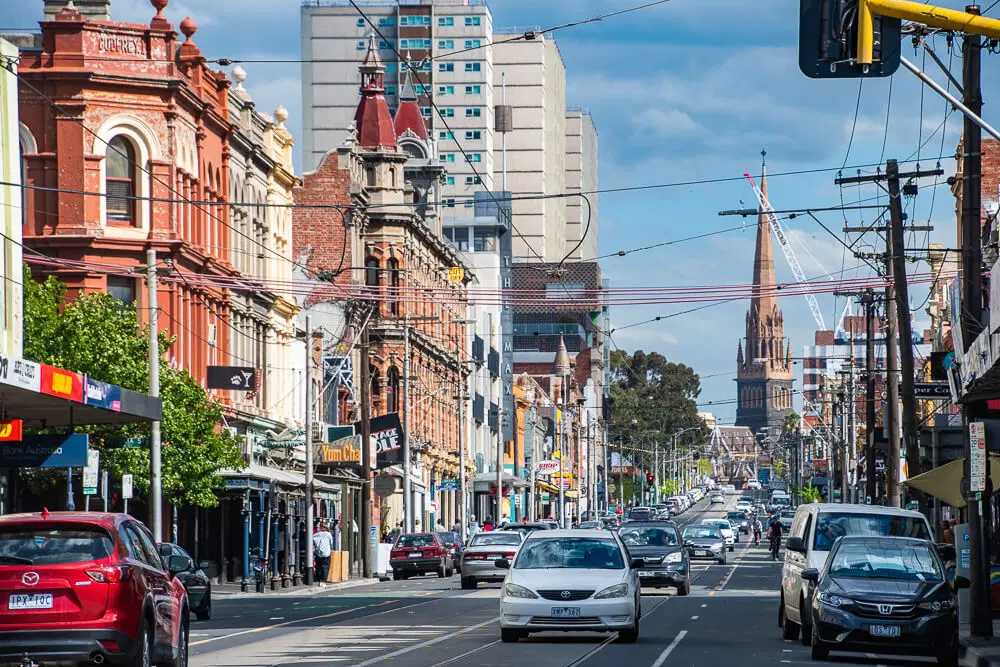

墨尔本市区网红点
咖啡文化街区（Coffee Culture Districts）：像弗林德斯街（Flinders Lane）和德格雷夫街（Degraves Street）这样的街区，以其独特的咖啡文化和街头氛围成为网红打卡点。
圣科达海滩（St Kilda Beach）：距离市中心不远的海滩，夕阳西下时尤其迷人，是拍摄海景和日落的理想地点。
Point Ormond是墨尔本的一个历史悠久且自然美景迷人的地方，位于St Kilda和Elwood之间的海岸线上。这个地区以其宁静的海滩、公园和美丽的景观而闻名。
这里可以俯瞰墨尔本市中心和波特·菲利普湾（Port Phillip Bay）的壮丽景色。这里有宽阔的草坪和树木繁茂的公园，非常适合散步、野餐和休闲活动。特别是傍晚时分，Point Ormond的日落景色非常壮观，吸引了许多摄影师和情侣来此观赏
漫步 Fitzroy是一种绝佳的方式来体验墨尔本这个充满文艺气息的社区。Fitzroy位于墨尔本市中心以北，是一个充满艺术氛围、充满创意的地方，也是咖啡馆、艺术画廊和独立商店的聚集地。在小红书等社交媒体有专门闲逛Fitzroy的路线。
Brunswick Street（布朗斯维克街）：这条街道是Fitzroy最具代表性的地方之一，有许多时尚的咖啡馆、餐厅、酒吧和独立商店。你可以沿着街道漫步，欣赏街头艺术和文化氛围。

弗林德斯街

圣科达海滩

Point Ormond

Fitzroy